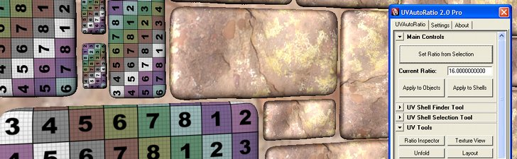uvAutoRatio Pro
v2.5.9
Last Updated 5 September 2013
Contents
1. Introduction
1.1 What Is This?
1.2 Key Features
2.1 Requirements
2.2 Installation
2.2.1 Windows Installation
2.2.2 Windows Uninstalling
2.2.3 Linux Installation
2.2.4 Linux Uninstalling
2.2.5 Mac Installation
2.2.6 Mac Uninstalling
2.2.7 Network Installation
2.4 Licensing
3. Quickstart
4.1 UVAutoRatio Tab
4.1.1 Ratio Tool
4.1.2 Other Tools
4.1.3 UV Shell Finder Tool
4.1.4 UV Tools
4.2 Settings Tab
4.2.1 UV Set Settings
4.2.2 Display Options
4.2.3 Layout Options
4.2.4 Misc Options
4.2.5 Auto-Update Options
4.3 About Tab
5. Other
5.1 Tips
5.2 Known Issues
5.2.1 "Can't perform polyMoveUV on Selection"
5.3 Scripting
5.3.1 GetSurfaceUVArea Command
5.3.2 UVAutoRatioPro Command
6.1 Example 1
6.2 Example 2
8. Support
1. Introduction
1.1 What Is This?
UVAutoRatio 2.0 Pro is a tool to help Maya artists get their UVs (texture coordinates) to the right scale. It unifies the '2D texture area' to '3D surface area' ratio across multiple meshes or mesh regions (UV shells).
This sounds rather complex, but really it's simple:
By scaling an objects UVs, its 2D texture area is scale relative to it's 3D surface area. So objects with large 3D surface area will get a large texture area, and objects with a small 3D surface area will get a smaller texture area.
UVAutoRatio does this all automatically for you. It is very fast and can quickly process scenes with a multitude of meshes or very high polygon meshes. It also offers a host of options for customising the way operation are performed.
1.2 Key Features
2. Getting Started
2.1 Requirements
The following versions of Maya are supported:
Microsoft Windows:
Apple Mac OS X:
Linux:
Please let us know about your platform requirements.
2.2 Installation
2.2.1 Windows Installation
UVAutoRatio 2.0 Pro is downloaded as an executable installer file.
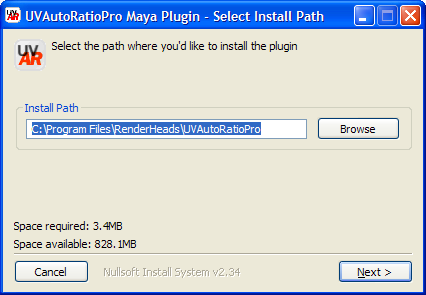
Automatic Licensing during Installation
You can create a text file "license.txt" containing the license key in the same folder as your installer. When the installer runs it will find this file and automatically license the product.
Silent Installation
You can run the installation silently by specifying the "/S" parameter. The installation folder can be specified by adding “/D=C:\Program Files\MyFolder”.
2.2.2 Windows Uninstalling
Simply run the uninstaller from the Start Menu in "RenderHeads , UVAutoRatio 2.0 Pro".
2.2.3 Linux Installation
2.2.4 Linux Uninstalling
Simply delete the folder containing the plugin, and remove the UVAutoRatioProModule.txt from your Maya/modules folder.
2.2.5 Mac Installation

2.2.6 Mac Uninstalling
Simply delete the folder containing the plugin, and remove the UVAutoRatioProModule.txt from your maya.app/Contents/modules folder.
2.2.7 Network Installation
UVAutoRatio Pro can also be installed centrally on a server with all the clients just accessing that single instance of the software. This makes maintaining software versions and upgrades much easier in a multi-user environment.
On the server copy over all the UVAutoRatio files and make the folder publically available.
For each client you'll need to create an entry for the plugin in their /modules folder pointing to the plugin location on the server.
For more information on how to do this please contact RenderHeads.
2.3 Launching the Plugin
To launch the plugin type "UVAutoRatioProUI" into the command-line window in Maya. This will display the UVAutoRatio window.
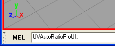
To save typing you may want to add this command to your shelf. The user interface has a button in the settings tab labelled "Add to Shelf" which will add this command to the current shelf using it's own icon graphic.
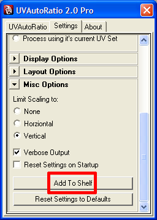
The button icon added to the shelf:
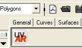
2.4 Licensing
UVAutoRatio Pro won't work until it has been given a valid license key.
To obtain and install a license key:
Your copy of UVAutoRatio will then be licensed, as indicated by this window:
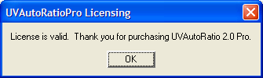
If this doesn't appear and you're having problems getting your license to work, please contact RenderHeads Support (support@renderheads.com).
3. QuickStart
The plugin launches with the most important controls visible:
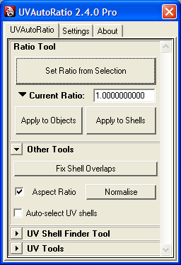
Unifying Texture Ratio Across Multiple Objects
Unifying Texture Ratio Across Multiple Shells
Matching the Texture Ratio of Multiple Objects to the Texture Ratio of a Specific Object
Matching the Texture Ratio of Multiple UV Shells to the Texture Ratio of a Specific UV Shell
4. The User Interface
The user interface is divided into 3 tabbed sections:
4.1 UVAutoRatio Tab
4.1.1 Ratio Tool - Where the action happens
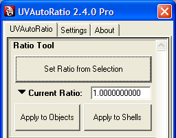
This is the most important panel in the whole interface as it contains the buttons: 'Apply to Objects' and 'Apply to Shells'. These are the two main operations that the plugin performs.
Running either of these operations will result in the UVs of the selection being scaled (and perhaps translated to fix overlapping UV shells if that option is selected).
The UVs are scaled so the ratio between the selected 3D area and it's 2D texture area matches (or at least comes extremely close to) the ratio specified in the box 'Current Ratio'.
Setting the Ratio
The value in 'Current Ratio' can be manually edited, or it can be set to the ratio of the current selection by clicking 'Set Ratio from Selection'. This will work with any selection, from a bunch of polygon meshes to a single face. This can be very useful in making other objects/shells match the ratio of another object/shell/selection.
Applying the Ratio
'Apply to Objects' will scale the UVs of each selected object (polygon mesh). Whole objects don't have to be selected for this to work - if the selection is made up of components of an object (vertices, edges, UVs, faces, etc) it will still operate on the entire object.
'Apply to Shells' will scale the UVs of the selected UV shells so they have the desired ratio. If the selection just contains components (vertices, edges, UVs, faces, etc) the UV shell that contains them will be processed. If an object is selected then all of it's UV shells will be processed.
Ratio Presets
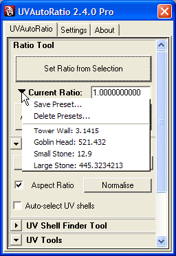
By clicking on the preset button presets can be saved and managed.
4.1.2 Other Tools
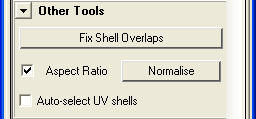
Fix Shell Overlaps
This button will try to move overlapping UV shells apart so they are no longer overlapping. It can be pressed repeatedly to move the shells apart. This option can be set to automatically happen after the Apply to Objects or Apply to Shells from the Settings tab, but it is available as a button here for easier workflow. There are further options for the settings in the Settings tab.
Normalise
This is similar to Maya's own UV Normalise command except it also works with multiple objects selected. This allows you to noramlise the UV's of mutliple objects without having to combine them. There is an option whether to maintain the aspect ratio of the UV's
UV Shell Auto-Selection Tool
Ticking this checkbox will make any component selection automatically propagate the selection to that entire UV shell.
4.1.3 UV Shell Finder Tool - Lists UV shells in the selection
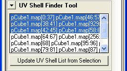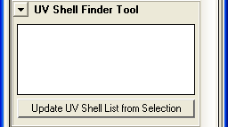
This is a handy tool that displays each UV shell in the selection and then allows you to select the shells simply by selecting items in the list.
Multiple selection is supported, and each UV shell you select in the list will be added to the current selection.
Double clicking on an item in the list will zoom the camera to that UV shell (just like the hotkey 'F' in Maya).
This tool can be used to easily select UV shells for capturing the ratio of that shell using 'Set Ratio from Selection', or it can be used as an easy way to build up a selection of shells to be processed.
4.1.4 UV Tools - Handy shortcuts
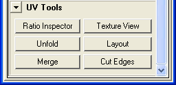
This panel is a collection of shortcuts to tools (most of them internal Maya ones) commonly used in conjunction with UVAutoRatio, placed here for quick and easy access.
Left clicking will apply the tool. Tools with options will display a small icon next to the cursor when hovered over, indicating that it can be right-clicked to bring up the tool options.
Right-clicking on these tool buttons will open up their options window.
Ratio Inspector
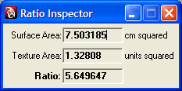
Ratio Inspector is the only non-Maya tool. This handy tool opens up in a new window and will show you the surface and texture area of anything as you select it. It also shows you the ratio between the two areas.
4.2 Settings Tab
4.2.1 UV Set Settings - Specifying which UV set to operate on
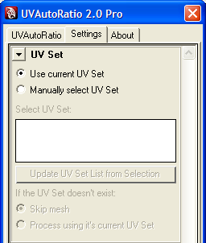
By default the UVAutoRatio Pro will operate on the 'current' UV Set of a mesh. These settings allow you to specify alternative UV Sets to operate on.
The current UV Set in Maya is a per-mesh property and can be set in the texture editor. Since the current UV Set can vary between meshes it can be useful to force the plugin to a UV Set of a specific name.
To manually specify the UV set to use:
If you do manually specify the UV Set, you can also define what happens when the plugin encounters a mesh without the named UV Set. The mesh can either be skipped or processed using it's current UV Set. If any meshes are skipped, a warning will be logged to the script editor window showing which meshes were not processed.
4.2.2 Display Options
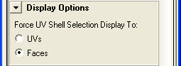
These display options apply to the UV Shell Finder Tool. When selecting UV shells from the list they can either be displayed as UVs or faces.
4.2.3 Layout Options - Automatically fixes overlapping UV shells
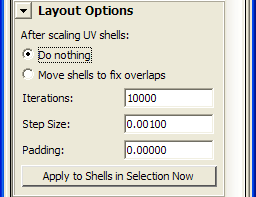
When UV shells are scaled up they can sometimes overlap each other. This option decides what the plugin does about this.
The 'Move shells to fix overlaps' option does what it says. This is similar to the option in Maya's 'UV Layout' command, however instead of completely rearranging the UV shells it will preserve the original layout of the shells relative to each other. Even if the shells already have the desired ratio, having this option on will fix overlapping shells.
Iterations is how many times layout options runs internally.
Step Size is the distance it tries to move the shells each time it runs an iteration. Increasing this number will decrease the time it takes to solve the layout, however the results will be less accurate.
Padding is the desired minimum distance between shells.
The images below shows UV shells that are overlapping, and the automatically fixed result:
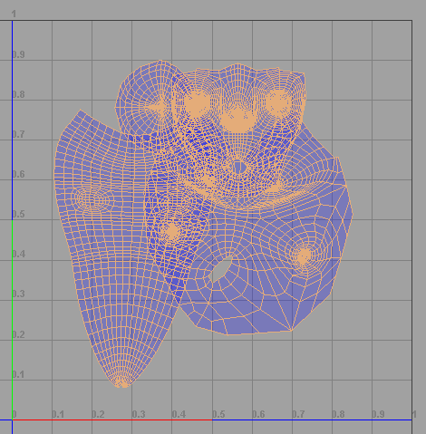
Before - shells are overlapping

After - Overlapping fixed while maintaining the original layout
4.2.4 Misc Options
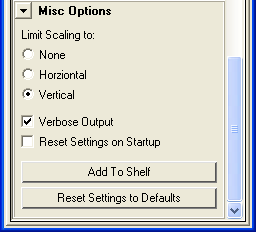
Scaling Axis:
Usually the UVAutoRatio 2.0 Pro will scale the object/shell equally in both horizontal and vertical directions to find the scale which gives the desired ratio. These options allow you to limit the scaling to either the horizontal or vertical axis.
Logging Verbosity:
If "Verbose Output" is enabled the plugin will write detailed information into the script editor output window about it's internal operations. This might be interesting/useful to advanced users. Here is an example of the data it displays:
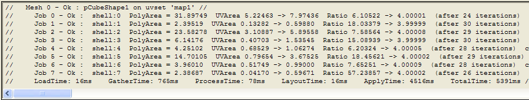
Save Settings:
By default the plugin will remember the last used settings and will restore them when you use the plugin in future. This can be disabled by checking this "Reset Settings on Startup" option.
Shelf:
The "Add To Shelf" button will add a shortcut to the MEL command "UVAutoRatioProUI;" to the current shelf.
Reset Settings:
Finally the settings can all be returned this their default state by pressing this button.
4.3.5 Auto-Update Options
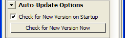
4.3 About Tab
The About tab is pretty straightforward:
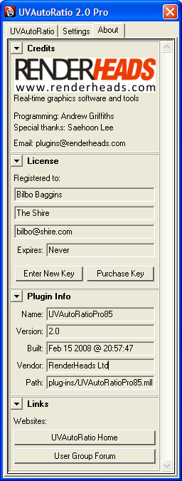
The license panel displays the details of the currently installed license. It also allows new keys to be entered and the 'Purchase Key' button will launch the RenderHeads Store in the default web browser.
The plugin panel displays information about the plugin. This is very useful for troubleshooting. When reporting a problem, please include this data in your query.
Finally there are some links to web pages related to this plugin. This is useful for checking for updates and bugfixes. The User Group is an online community where users can post their opinions and queries, make feature requests, show off what they've used the plugin for, get access to upcoming beta versions and interact with the developers directly.
5. Other
5.1 Tips
5.1.1 Performance
Clearing history will improve the performance of the plugin
5.1.2 How do I add support for my language to UVAutoRatio?
UVAutoRatio supports multiple langauges through a .res.mel resource files which contains all the text strings used by the plugin. You simply need to copy this resource file and modify the text strings.
Maya will then run the plugin in your language.
If you do translate the plugin into your language please let us know so we can share it with the rest of the community.
5.2 Known Issues
5.2.1 "Can't perform polyMoveUV on Selection"
There have been reports of some models that don't work with the plugin, and output:
// Warning: line 1: Can't perform polyMoveUV1 on selection //
We have tracked this down to a bug in Maya where it has an invalid current uvset assigned to the mesh. To fix it, simply select the mesh, open the Texture Editor window, go to the UVSet menu and select the UV set (even if it's already selected).
5.3 Scripting
It is also possible script UVAutoRatio Pro to include it into a workflow or custom pipeline. Below is a list of the commands that come with UVAutoRatio Pro and descriptions of their parameters.
5.3.1 GetSurfaceUVArea Command
This command uses the current selection and returns 3 floats: the 3d surface area, the 2d texture area, the ratio of surface area / texture area. Its parameters are:
Short name | Long name | Value type | Description |
-us | -uvSetName | string | The name of the UV set to use (optional) |
-fb | -fallback | If the named UV set is not found in a mesh, use the default UV set instead of skipping it (optional | |
-hlp | -help | Displays this parameter list |
5.3.2 UVAutoRatioPro Command
This is the main command which does the UV scaling and UV shell manipulation. Its parameters are:
Short name | Long name | Value type | Description |
-hlp | -help | Displays this parameter list | |
-r | -ratio | float | Desired 3D : 2D ratio |
-us | -uvSetName | string | The name of the UV set to use (optional) |
-fb | -fallback | If the named UV set is not found in a mesh, use the default UV set instead of skipping it (optional) | |
-op | -operation | integer | 0 = whole mesh, 1 = uv shell |
-vb | -verbose | Display output (optional), default false | |
-lay | -layout | Layout UV shells to prevent overlapping (optional), default true | |
-ss | -skipscale | Skip the scaling operation (useful if you only want to fix layout) (optional) | |
-osh | -onlyScaleH | Restrict scaling of UVs to horizontal axis (optional), default false | |
-osv | -onlyScaleV | Restrict scaling of UVs to vertical axis (optional), default false |
6. Usage Examples
6.1 Example 1
Lets say we have 4 'rocks' all different scales and using the same texture, looking something like this:
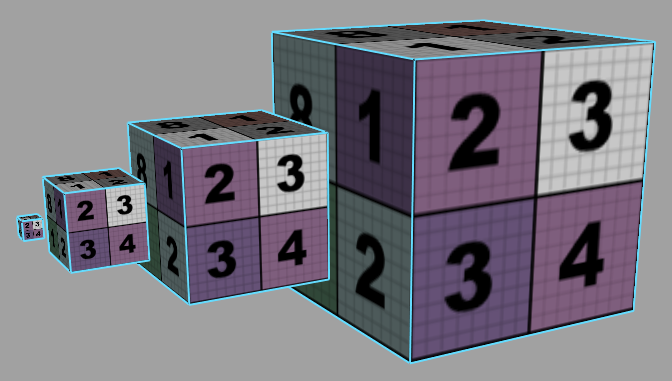
We can see that the large 'rock' is using the same amount of texture area as all the other smaller 'rocks'. But we'd really like the texture usage to be proportional to the area of the mesh. Here are some reasons why:
So we'll run UVAutoRatio to unify the UV ratio across multiple objects, producing this result:
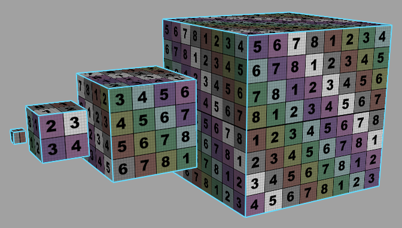
6.2 Example 2
You've finally finished unwrapping/pelting your UV shells and you have something like this:
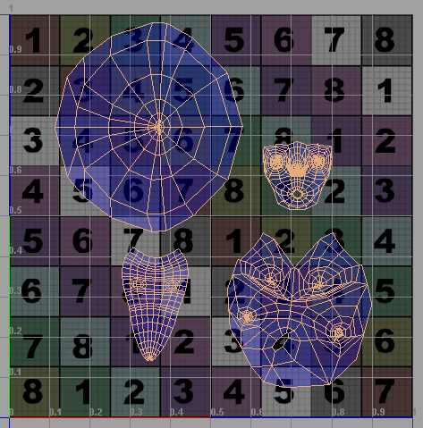
Now you have to manually inspect each shell and try to guess what size to scale it so they're all proportional. This is a serious drag! You want to do this for a few reasons though:
Instead let UVAutoRatio do it for you:
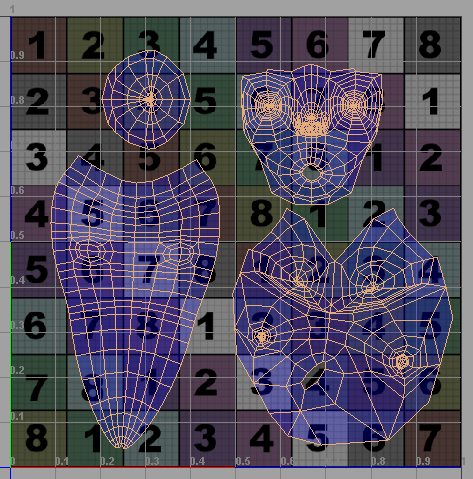
7. Release Notes
Version 2.6.x - ?
Version 2.5.9 - 5 September 2013
Version 2.5.8 - May 2013
Version 2.5.4 - December 2012
Version 2.5.4 - May 2012
Version 2.5.0 - August 2010
Version 2.4.5 - 13 October 2009
Version 2.4.2 - 25 March 2009
Version 2.4.0 - 03 March 2009
Version 2.3.1 - 22 October 2008
Version 2.3 - 11 September 2008
Version 2.2.1 - 15 August 2008
Version 2.2 - 24 June 2008
Version 2.1 - 24 April 2008
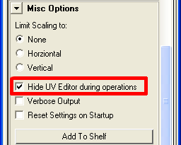
There is now a new option to automatically hide and then reshow the texture editor window while the plugin is doing it's work. This makes the plugin work a lot faster for high polygon meshes.
We've increased the speed of the case where your meshes has overlapping UV shells, and you use the option to automatically fix overlapping shells. This now takes half the time.
Added a progress window. This is useful for high polygons meshes that may take some time, gives reassurance that the Maya hasn't frozen.
The plugin can now be interrupted. So if you made a mistake and told it to do some horrendous amount of work you can just hit the escape key and it'll stop.
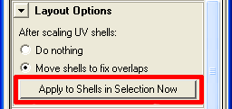
A new button to just run "fix overlapping UV shells".
Pressing the UV Texture button when the window is open will now hide the window. The same goes for the Ratio Inspector.
The licensing changed slightly, so you may need to re-enter your key again.
Version 2.0 - 2 April 2008
8. Support
Website
UVAutoRatio has it's own website where updates and news can be found:
UVAutoRatio Discussion Forum
Use the discussion forum to post your questions, opinions, submit feature requests, report bugs and show off ways you've used the plugin:
http://www.RenderHeads.com/forum/viewforum.php?f=4
RenderHeads Details
For further support please contact the developers directly:
Web: www.renderheads.com
Email: contact@renderheads.com
Phone: +447970692070
Copyright © 2007-2013 RenderHeads Limited. All rights reserved.